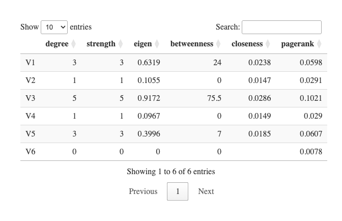

RSNet is an R package that implements a resampling-based framework for structure learning and analysis of partial correlation networks modeled as Gaussian networks, and conditional Gaussian Bayesian networks (optional) for mixed data types combining continuous and discrete variables.
To enhance the stability and reliability of inferred network structures, RSNet incorporates multiple resampling strategies. For both Gaussian and conditional Gaussian Bayesian networks, the framework supports four general approaches:
- Bootstrap.
- Sub-sampling.
- Stratified bootstrap.
- Stratified sub-sampling.
For Gaussian networks, RSNet further provides cluster-based sampling options specifically designed to accommodate correlated or family-based data, including:
- Cluster-based bootstrap.
- Fractional cluster-based bootstrap.
Beyond structure learning, RSNet includes a suite of network analysis tools containing standard network metrics, graphlet-based analysis, and differential connectivity analysis.
The overall workflow is illustrated in the following diagram: 
Please see our documentation for additional examples.
Usage
IMPORTANT NOTE: The Conditional Gaussian Bayesian Network functionalities ensemble_cgbn() and consensus_net_cgbn() are optional in RSNet and require the RHugin package. Installation instructions for macOS, windows, and Linux.
The following example demonstrates the usage of RSNet with a synthetic dataset.
(ii) Prepare input dataset
The core functions, ensemble_ggm() and the optional ensemble_cgbn(), accept an n × p data frame or matrix with both row and column names, where n represents the number of observations (samples) and p denotes the number of features. In the following example, we illustrate the workflow using a synthetic toy dataset containing 100 observations and 20 features.
(iii) Run and learn an ensemble of networks from resampled datasets
In this example, we use the simulated dataset as input and perform bootstrap resampling (boot = TRUE) with 100 iterations (num_iteration = 100). To estimate empirical confidence intervals for each edge, set estimate_CI = TRUE; for improved memory efficiency, this option can be disabled (estimate_CI = FALSE). Both ensemble_ggm() and the optional ensemble_cgbn() functions support parallel computation through the n_cores parameter.
The wrapper function capture_all() can be used to suppress messages generated during the execution of ensemble_ggm().
ensemble_er <- capture_all(
ensemble_ggm(dat = toy_er$dat, # A n x p dataframe/matrix
num_iteration = 100, # Number of resampling iteration
boot = TRUE, # If FALSE, perform sub-sampling
sub_ratio = NULL, # Subsampling ratio (0–1)
sample_class = NULL, # Optional: for stratified sampling
correlated = FALSE, # If TRUE, then clusted-based resampling is performed
cluster_ratio = 1, # Used only when `correlated = TRUE`
estimate_CI = TRUE, # If TRUE, estimate the empirical confidence interval
method = "D-S_NW_SL", # Inference method
n_cores = 1) # Number of cores for parallel computing
)(iv) Consensus network construction
We then integrate the ensemble of inferred networks to construct a consensus network, designed to filter out spurious edges introduced by noise and to facilitate downstream analyses. The consensus_net_ggm() function takes the output of ensemble_ggm() as its primary input, while the optional consensus_net_cgbn() function operates on the output of ensemble_cgbn().
Edges in the consensus network can be filtered based on their significance using the filter parameter: nominal p-value (filter = "pval"), Benjamini–Hochberg adjusted p-value (filter = "fdr"), or no filtering (filter = "none"). If estimate_CI = TRUE was specified in the ensemble_ggm() step, edges whose confidence intervals include zero are automatically excluded.
consensus_er <- consensus_net_ggm(
ggm_networks = ensemble_er, # The output of "ensemble_ggm()"
CI = 0.95, # Confidence interval
filter = "pval", # Filter method
threshold = 0.05 # Significant level of the selected filter
) (v) Interactive visualization
RSNet supports interactive visualization for downstream analyses. Although the plot_cn() function is primarily designed to visualize consensus networks, it can accept any igraph object as its first argument. The function generates an interactive network plot along with a list object containing node and edge attributes.
Additionally, by specifying the query argument as a character vector, users can visualize the subgraph induced by the queried nodes and their neighbors up to the specified order (via the order parameter).
Confidence interval visualization is available only when the following conditions are met:
CI_show = TRUEedge_label == "pcor"Both
lower_quantileandupper_quantileare included in the edge attributes
p <- plot_cn(
ig = consensus_er$consensus_network, # An "igraph" object
query = NULL, # Node of interests, NULL or a character vector
order = 1, # Order of neighbors
edge_label = "pcor", # The edge attribute to be shown
CI_show = TRUE, # Show empirical confidence interval
main = "Example" # Title
)
p$p
(vi) Centrality analysis
Centrality analysis is a classical approach in network analysis used to quantify the relative importance or influence of individual nodes within a network. RSNet implements this functionality through the centrality() function, which computes several commonly used centrality measures, including degree, strength, eigenvector, betweenness, closeness, and PageRank centralities, using an igraph object as input. For weighted networks, users can specify the weight parameter to indicate the edge attribute representing the desired weighting scheme.
centrality(
ig = consensus_er$consensus_network,
weight = NULL
) %>%
as.matrix(.) %>%
round(., 4) %>%
as.data.frame(.) %>%
head(.) %>%
DT::datatable(.)